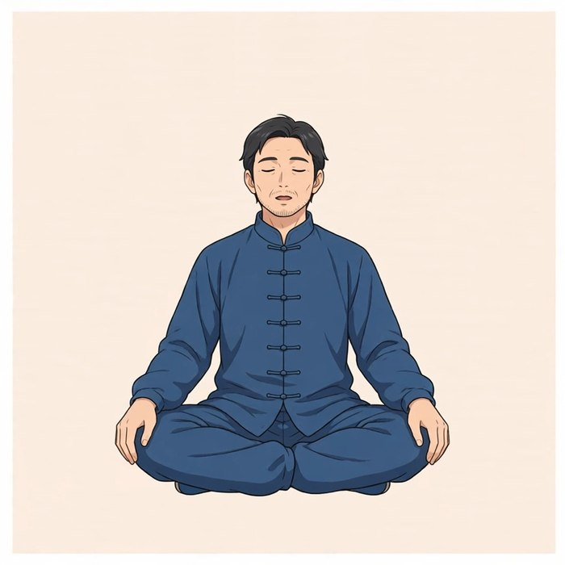

六字訣 ― 音を吐く呼吸の功法

六字訣は、息を吐くときに六つの異なる音（口の形）を使い分ける呼吸の功法です。南北朝時代の陶弘景の著作に原型が見られるとされ、音ごとに身体の部位との対応が伝えられてきました。声を出す段階と、音の形だけを口で作って静かに吐く段階（口型のみ）があり、現代の健身気功では後者が中心です。
六つの音と対応
| 音 | 読み | 対応する臓腑（伝統） | 口の形の目安 |
|---|---|---|---|
| 呬 | シー | 肺 | 歯を軽く合わせ、舌先を下の歯の裏に。細く長く吐く |
| 呵 | ハー（カ） | 心 | 口を開き、舌を下げる |
| 呼 | フー | 脾 | 唇を丸くすぼめる |
| 噓 | シュー | 肝 | 唇を横に開き、息を細く出す |
| 吹 | チュイ | 腎 | 唇を前に突き出し、ろうそくの炎を揺らすように |
| 嘘 | シー（細く） | 三焦 | 歯の間から細く長く出す |
※ 音と臓腑の対応、音の読みは、流派や時代の整理によって異同があります。ここでは健身気功の一般的な整理を示しています。
実践法
一つの音を6回繰り返し、六つの音で一周する形が基本です。各音の前後には、静かな呼吸（調息）を挟みます。吐く息は「細く、長く、均等に」が原則で、吸うときは鼻から自然に吸います。全体で10〜15分ほどです。
順序と流派差
六つの音を巡る順序は、整理によって異なります。健身気功の標準的な整理では「噓（肝）→呵（心）→呼（脾）→呬（肺）→吹（腎）→嘻（三焦）」の順に、五行の相生（木→火→土→金→水）の巡りに沿って並べます。一方、上の対応表のように臓腑の並びで巡る整理も伝統的にあり、三焦の音を「嘘」とする伝本もあります。どれが正しいというより、どの系譜の整理か、という違いです。独習では一つの整理に決めて続けるのが混乱がありません。
注意
- 息を無理に長くしようとすると、かえって緊張します。吐き切らない範囲で心地よく。
- 呼吸器の病気のある方は、主治医に相談のうえで行ってください。発作時は行いません。
- めまいを感じたら中止し、座って休んでください。
六字訣の位置づけ
六字訣は、動きの功法ではなく「吐く息」に集中する功法です。中医学では、吐くことは「出す・清める」方向の働きと結びつけて考えられてきました。音ごとに口の形が変わると、吐く息の抵抗と長さが変わり、呼吸の質が変わります。臓腑との対応は伝統的な配当であり、「この音が臓器に直接効く」という意味ではありません。呼吸を整える実践として、静かに座って行える点が、体力に不安のある方にも取り入れやすい理由です。季節との対応も語られ、たとえば冬は腎に対応する「吹」を丁寧に行う、といった組み立てが伝統的に行われてきました（「コラム」でも節気に沿って触れています）。
中医学・気功理論から見た六字訣
六字訣の理論的な土台は、呼吸と気の関係です。中医学では、呼吸によって取り入れられる清気が、食べ物から作られる水穀の気と合わさって宗気になると考えます（「気の種類と働き」）。吐く息に音と口の形を与える六字訣は、この「息を整えることが気を整える」という考え方を、最も直接的に実践へ落とした功法です。音と臓腑の対応は臓腑論に基づく伝統的な配当で、調息を中心に据える点で三調の理論の「調息」の実例でもあります。
このページは、中医学の伝統的な考え方を紹介する情報提供です。診断や治療の案内ではありません。症状のある方は、医療機関での診察を土台にしてください。